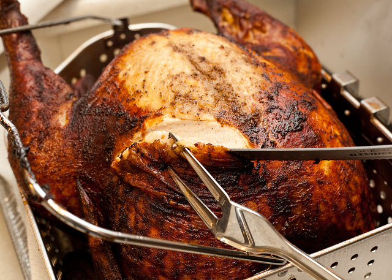

Cajun Deep-Fried Turkey
Homepage

Description
One of my favorite cooking ideas is to deep fat fry
our turkey for the holidays or New Year’s parties. My
family loves it when I cook; gives them the time to do
other baking and cooking while I prepare the main dish.
Ingredients
- 2 cups butter
- 1/4 cup onion juice
- 1/4 cup garlic juice
- 1/4 Louisiana-style hot sauce
- 1/4 cup Worcestershire sauce
- 2 tablespoons ground black pepper
- 1 teaspoon cayenne pepper
- 7 fluid ounces beer
- 3 gallons peanut oil for frying
- 1 (12 pound) whole turkey
Steps to cook Cajun Fried Turkey
-
Melt the butter in a large saucepan over
medium heat. Add the onion juice, garlic juice,
hot sauce, Worcestershire sauce, black pepper,
cayenne pepper and beer. Mix until well blended.
-
Use a marinade injecting syringe or turkey baster with
an injector tip to inject the marinade all over the
turkey including the legs, back, wings, thighs and
breasts. Place in a large plastic bag and marinate
overnight in the refrigerator. Do not use a kitchen
trash bag. If your turkey is large, you can use an
oven bag.
-
When it's time to fry, measure the amount of oil
needed by lowering the turkey into the fryer and
filling with enough oil to cover it.
Remove the turkey and set aside.
-
Heat the oil to 365 degrees F (185 degrees C).
When the oil has come to temperature, lower
the turkey into the hot oil slowly using the
hanging device that comes with turkey
deep-fryers. The turkey should be completely
submerged in the oil. Cook for 36 minutes,
or 3 minutes per pound of turkey. The turkey
is done when the temperature in the thickest
part of the thigh reaches 180 degrees F.
Turn off the flame and slowly remove from the
oil, making sure all of the oil drains out of
the cavity. Allow to rest on a serving
platter for about 20 minutes before carving.
Nutritional Facts (per serving)
- Calories: 1036
- Fat: 71g
- Carbs: 3g
- Protein: 91g